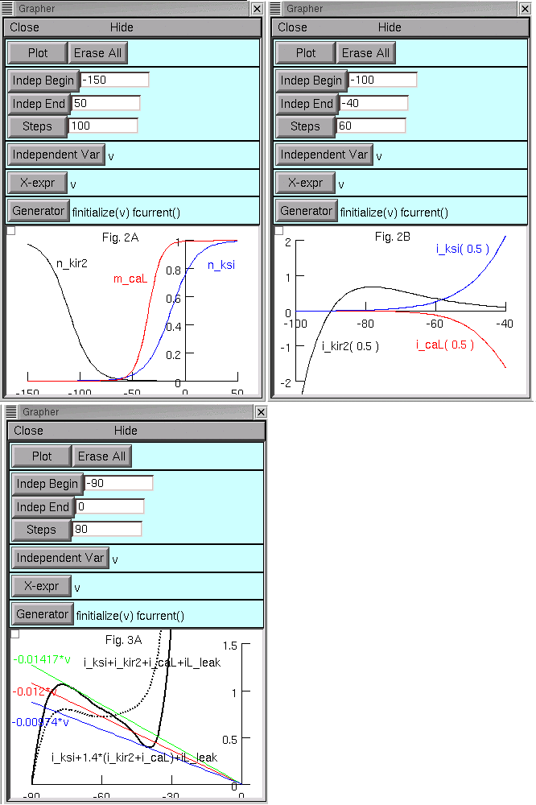
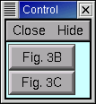
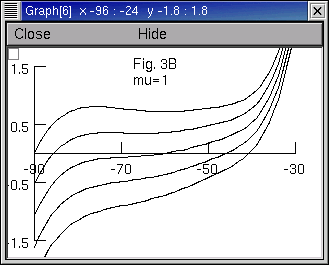
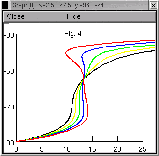
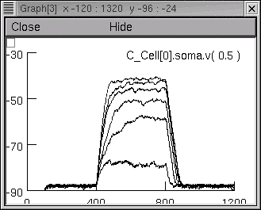
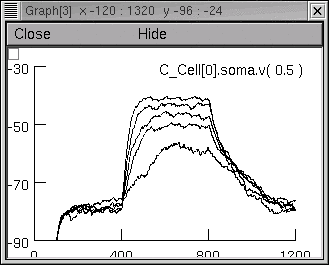
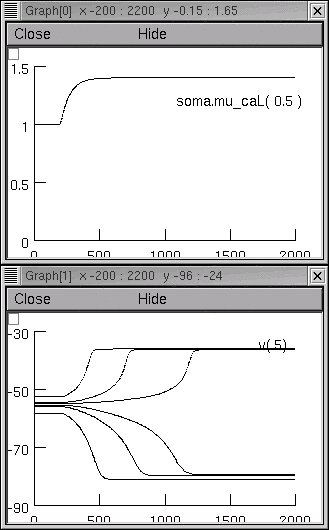
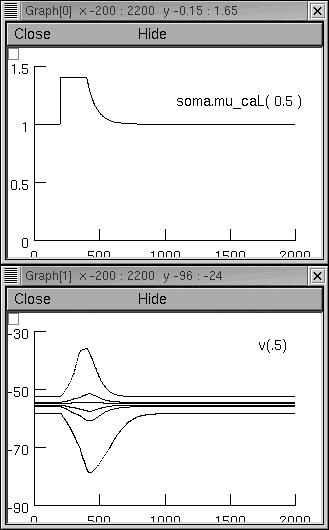
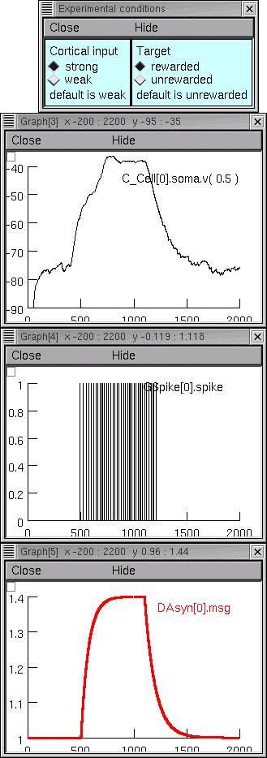
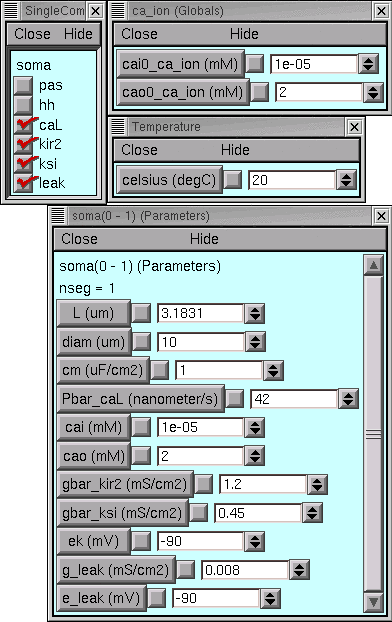

Address questions to Ted Carnevale
ted.carnevale@yale.edu
The following comments show how to operate these programs, and discuss the implementation of the models and how to reuse this code.


to bring up a plot that reproduces Fig. 3B

or Fig. 3C

Fig. 6a

Fig. 6bNotes:

Fig. 7A

Fig. 7BNote: The actual values of mu used for the figures in the paper were not available. The values used in these programs are sufficient to demonstrate the same dynamical features of the model that were illustrated by the original figures.

Example 1: weak cortical input, target unrewarded

Example 2: strong cortical input, target rewardedNotes:
Among these files there are actually two different implementations of a spiny neuron model. The first is used to generate the figures that illustrate the basic properties of the model (Figs. 2 - 4 and 7), and the second is used for those figures that show how dopamine affects the model's response to afferent spike trains (Figs. 6 and 10).
Both implementations use the same membrane currents, which are specified by these files:
caL.mod kir2.mod ksi.mod leak.modOf these, only caL.mod includes temperature dependence (needs
celsius = 20 to reproduce the figures
from the paper).
Some of the programs also use the mechanisms specified in one or both of these files:
damsg.mod gspike.modThese mechanisms are described later in this document.

These were set up with NEURON's GUI, and they are recreated by having NEURON execute the code in model_mu_1.ses. Think of this file as a "virtual experimental preparation," somewhat analogous to a single cell in tissue culture or an acutely isolated soma.
This file is loaded by the following programs :
figs2and3A.hoc fig3BC.hoc fig4.hoc fig7a.hoc fig7b.hocIt needs only one thing to be a complete specification of a model of a spiny neuron : some way for the caL and kir2 mechanisms to discover the value of the "dopamine message." In figs2and3A.hoc this is done by the statements
msg = 1
soma for (x,0) { // skip the nodes at 0 and 1
setpointer mu_caL(x), msg
setpointer mu_kir2(x), msg
}
which link the "mu" POINTERs of caL and kir2 to the hoc scalar msg.
Except for fig7a.hoc and fig7b.hoc,
the other programs that use model_mu_1.ses contain similar statements.
This is OK for simulations in which mu remains constant
or changes abruptly from one steady level to another.
For fig7a.hoc and fig7b.hoc, computational efficiency requires a different approach. Unlike other simulations involving the "stand-alone model," these need msg to have nontrivial dynamics. Using a hoc scalar and modifying NEURON's main computational loop to force incremental changes in msg at every fadvance() is not the best way to do this.
Therefore fig7a.hoc and fig7b.hoc employ a DAsyn point process. This "net-ready" synaptic mechanism has a state variable msg which, in this implementation, has first order dynamics and can be driven by spike events. The file fig7syn.hoc contains the statements that link the "mu" POINTERS of caL and kir2 to this msg.
DAsyn is also used in the program that reproduces Fig. 10 (see below).
fig6.hoc fig10ab.hocThis model implementation has a "fast conductance change excitatory synapse" (ExpSyn) that receives spike trains representing afferent cortical activity. It happens to be implemented with NEURON's NetReadyCellGUI tool, but its anatomical and biophysical properties are identical to those of the "stand-alone" model.
The NetReadyCellGUI tool that specifies the properties of this "biological model cell", and the ArtCellGUI tool that specifies the properties of the artificial spiking cells that generate the afferent spike trains, were created using NEURON's GUI and saved to session files called fig6netcells.ses and fig10netcells.ses.
As noted above, the conductance fluctuations used in the simulations reported by Gruber et al. are quite different from those generated by spike trains with negexp statistics converging on an ExpSyn mechanism. Even so, the simulation results produced by these files are qualitatively quite similar to the published figures. Mean synaptic conductance, rather than its detailed fluctuations, appears to be the principal factor that governs the time course of membrane potential.Network architectures were specified with the NetGUI tool and saved to session files called fig6net.ses and fig10net.ses. "Instrumentation" (simulation controls and graphical displays of results) are contained in fig6netrig.ses and fig10netrig.ses.
fig6.hoc uses a simple hoc scalar called msg to represent dopaminergic effect, and the mu POINTERs of the caL and kir2 mechanisms are linked to it in the file fig6.hoc. As noted previously, the simulations that generate Figure 10 use a DAsyn point process so that msg can have its own dynamics and yet be computationally efficient. fig10syn.hoc contains the statements that link the mu POINTERs of caL and kir2 to the DAsyn's msg.
The "spike" mechanism used by Gruber et al. 2003 for Fig. 10 requires an implementation that demands fig10ab.hoc be run only with fixed time step integration (see gspike.mod).
Reusable hoc code
c_cell.hoc contains a template (class definition) for model neurons with properties identical to the one that was used to generate Fig. 10, complete with both an ExpSyn (to receive "cortical input spikes") and a DAsyn (to receive "dopaminergic input spikes"). It can be used, with or without NEURON's GUI, to spawn new instances of this model neuron that are suitable for use in network simulations.
load_file("c_cell.hoc")
objref foo
foo = new List()
for i=0,99 foo.append(new C_Cell())
foo.count() // returns 100
// now there are 100 of these cells ready to be connected into a network
Caveat:
Be sure to specify the operating temperature, e.g.
celsius = 20
How I created c_cell.hocHere's the modified proc synapses()--
- Clicked on the "Hoc File" button of fig10ab.hoc's NetGUI tool and specified fig10network.hoc as the name of the output file
- Extracted the template for the C_Cell class from fig10network.hoc
- Finally, made one small but important modification to the C_Cell template:
adding a "forsec all" loop to proc synapses() so that the mu POINTERs of every instance of caL and kir2 will be linked to the DAsyn's msg variableproc synapses() { /* ExpSyn0 */ soma syn_ = new ExpSyn(0.5) synlist.append(syn_) syn_.tau = 3 /* DAsyn1 */ soma syn_ = new DAsyn(0.5) synlist.append(syn_) // attach all POINTERs to DAsyn.msg forsec all { if (issection("caL")) { for (x,0) { // skip the nodes at 0 and 1 setpointer mu_caL(x), synlist.object(1).msg } } if (issection("kir2")) { for (x,0) { // skip the nodes at 0 and 1 setpointer mu_kir2(x), synlist.object(1).msg } } } }